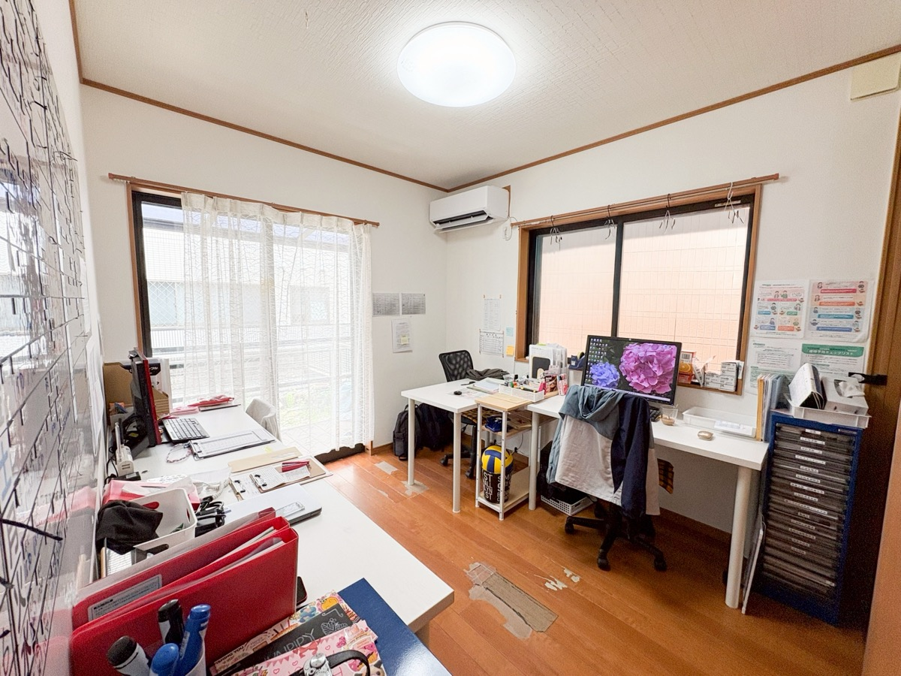

WORK仕事内容
ご利用者様・ご家族との面談をもとにした個別支援計画の作成、現場のマネジメント、スタッフの育成などを担います。NewValleyでは事業所の開設が続いており、経験を活かして運営の中心を担っていただける方を歓迎します。

POSITIONS募集職種
児童発達支援管理責任者（児発管）
月給 応相談（経験・資格による）／シフト制。実務経験者優遇、マネジメントをお任せします。
サービス管理責任者（サビ管）
月給 応相談（経験・資格による）／シフト制。個別支援計画の作成とスタッフ育成を担います。
相談支援専門員
現在、こちらの職種の募集は一時中断しています。再開時は採用サイトのおしらせでお知らせします。
※条件の詳細は面談でご相談ください。「まずは話を聞きたい」という方も歓迎です。